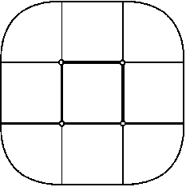

A square of side 15 contains 20 non-overlapping unit squares. Prove that it is possible to place a circle of radius 1 inside the large square, so that it does not overlap with any of the unit squares.
Consider a locus consisting of all the possible points no further than 1 unit away from a unit square as in the diagram below. It is clear that any unit circle whose centre lies outside of this locus will not intersect with the unit square. The area covered by this locus is equal to $ \pi +5$. The centre of the unit circle must also be at least 1 unit away from the edge of the large square, that is, it must lie inside a square of side 13. It is obvious that 20 loci each with area $\pi +5$ cannot completely cover a square of side 13, since $20(\pi+5)<13^2$. A unit circle with its centre at a point not covered by the loci has the required property.
